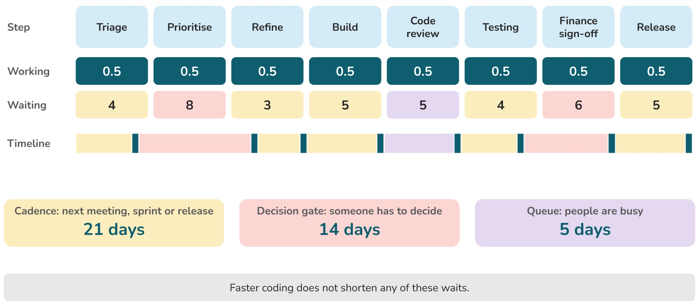
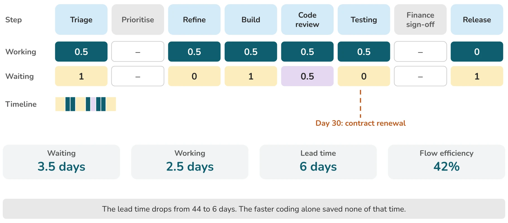

What this resource is for
AI speeds up the work itself. Coding, testing and writing specifications take less time than they did a year ago. But in most organisations, the time from a request to the customer has hardly changed, because most of that time is not work. It is waiting: for the next meeting, for someone to decide, for busy people to pick the work up. Decision latency — the time between when a decision is needed and when it is made — is one of the largest parts of that waiting.
This resource covers two related diagnostic tools. Decision latency analysis looks at individual decisions and the reasons they take long. Wait time analysis follows one piece of work from the request to the customer and shows where it waits and for what kind of reason. Together they answer the question that matters before anyone invests in making people faster: where does our work wait?
Decision latency: the invisible tax on speed
Decision latency is the elapsed time between when a decision is needed and when it is made. It is one of the most underappreciated sources of delivery slowdown, because it is often invisible in standard project tracking. A task may be "in progress" for three weeks, but if you examine the timeline carefully, two of those weeks were spent waiting — for approval, for a missing stakeholder to weigh in, for a meeting that finally happened, for clarity on a dependency.
Decision latency compounds in complex organisations. A single delayed decision can block multiple downstream teams simultaneously, and the cost of that delay multiplies across everyone waiting. In an AI-accelerated environment, where the tempo of production has increased but governance structures have not been updated to match, decision latency is frequently the dominant constraint on actual delivery throughput.
Three causes account for most decision latency in practice.
Wrong decision-maker is the most common cause. The decision is made at a level of the organisation that is several steps removed from where the work happens, or by a group that is not needed for it. The people doing the work understand the problem deeply and could decide quickly, but they are required to escalate. Each escalation step adds latency, loses context, and often produces a decision made by someone who knows less. The same cause is at work when nobody is clearly accountable: the decision is discussed in meetings and passes through inboxes, but because no one is explicitly responsible for making it, it drifts. A product council that meets every two weeks and decides on a two-day change that the product owner could decide alone is a typical example.
Missing protocol means there is no rule for how a kind of decision is made: who decides, by when, on what criteria, and when someone else has to be involved. Without a rule, every decision is treated as an exception. Everything goes to the same forum, reviews are open-ended, stakeholders feel entitled to relitigate settled questions, and decisions never quite reach closure. If no rule says which invoice changes need a sign-off from Finance, every change needs one.
Missing context means the person who has to decide sees the matter for the first time at the moment of decision. They have to understand it from the start before they can decide, and the work waits while they do. A Finance team that sees a change only at the end of the process is in this position. The remedy is to let the context travel with the work, or to involve the decider earlier.
Naming the cause matters, because each cause has a different fix: the right decision-maker, a protocol, or context that arrives earlier.
Diagnosing decision latency
A decision latency diagnosis examines a recent delivery cycle and asks specific questions about each decision point encountered.
For each significant decision in the period under review, identify: when the need for the decision became apparent; when the decision was actually made; who made it; who was consulted; and whether the outcome was later reversed or relitigated. The gap between the first and second items is your latency figure. The other data points tell you what caused it.
Look for patterns. If most delayed decisions share a common decision-maker, or wait for a forum that meets rarely, the cause is the wrong decision-maker, and the structural solution is either delegation or a clearer mandate. If similar decisions are handled differently each time, or are frequently relitigated after being made, a protocol is missing. If the decision-maker needs a long time to get up to speed, context is missing and should reach them earlier.
The goal of the diagnosis is not to assign blame but to produce a structural map of where authority, accountability, and coordination are misaligned with the tempo of delivery.
Wait time analysis
Wait time analysis is a simplified form of value stream mapping, the practice from lean manufacturing in which people followed a product through the factory and measured how much time was spent working on it and how much time it spent waiting. In knowledge work the same idea answers one question: where does a piece of work wait on its way to the customer? Instead of drawing a process diagram of how work should flow, you follow one real piece of work from the request to the customer, and you note the working time and the waiting time of each step.
![Wait time analysis in three steps, based on value stream mapping. A row of people at desks, from a request on the left to a delighted customer on the right, with piles of waiting work and two decision gates guarded by managers between the steps. Three notes underneath: map the steps by following one piece of work from the request to the customer, separate work from waiting by noting how long each step takes and how long work waits, and find out why work waits by classifying each wait as a cadence, a decision gate or a queue.](img/wait-time-analysis-steps.webp)
Lead time is the total time from the request to the customer. It is the number the customer experiences, and it is the sum of all working time and all waiting time on the way.
Flow efficiency is the share of the lead time in which someone actually works on the item. In knowledge work and software delivery, it is surprisingly low: frequently under 20% even in well-run organisations, and under 5% in organisations with significant decision latency. The rest is waiting — for approvals, for dependencies, for capacity, for decisions.
How to run a wait time analysis
Pick one small change your team delivered recently, ideally one that needed about two days of work, and go through three steps.
Map the steps. Follow one piece of work, not a process diagram, from the request to the customer. List every step it passed through, including the ones nobody thinks of as work: triage, prioritisation, sign-offs, the release.
Separate work from waiting. For each step, note how many days people actually worked on it and how many days it waited before the step started. Wait times are almost always larger than people expect, and many hide in handoffs that are assumed to be instantaneous but are in fact batched or queued. Add up the working time, the waiting time and the lead time, and calculate the flow efficiency.
Find out why work waits. Classify each wait as one of three types.
Cadence: the work waits for the next meeting, sprint or release. Triage, refinement, the start of a sprint, a weekly regression test and a release train are cadences. The wait is set by the rhythm, not by the work.
Decision gate: the work waits for someone to decide. A prioritisation forum or a sign-off is a decision gate. This is where decision latency shows up in the analysis, and where the three causes described above apply.
Queue: the work waits for busy people. A review queue is the typical case. A queue grows when more work arrives than the same people can handle.
Each type has its own fix. A cadence is shortened by changing the rhythm or by pulling work when there is capacity, a decision gate by removing its cause, and a queue by freeing up capacity. Once the analysis is done, the diagnostic questions are: where is most of the elapsed time spent? Which type of wait is the largest? Which decision gates wait longest, and what is the cause of each? What would it take to remove the longest wait?
Worked example: a two-day change takes 44 days
A B2B software company gets a request from a key customer: print the purchase order number on every invoice, because their procurement department rejects invoices without it. The Invoicing team owns the change, the work takes about two days, and the customer's contract is up for renewal in 30 working days.
The change goes through eight steps: triage, prioritisation, refinement, build, code review, testing, a sign-off from Finance and the release. Together they take six days of work and 38 days of waiting. The lead time is 44 days and the flow efficiency is 14%, so the change arrives 14 days after the contract renews. Nobody was slow. Every single step was done quickly.

Now the team starts using AI for coding and testing. The build takes half a day instead of two, and testing half a day instead of one. But AI produces more code and the same people still review it, so the wait for code review grows from three to five days. The work drops from six to four days, the waiting grows from 38 to 40 days, and the lead time stays at 44 days. Flow efficiency falls to 9%. AI sped up the work, but the work was never the main problem.
Classifying the waits shows why. The cadences — triage, refinement, the start of the sprint, the weekly regression test and the release train — add up to 21 days. The two decision gates, prioritisation and the Finance sign-off, add up to 14 days. The review queue adds 5 days. None of these waits gets shorter when people code faster. They come from how the work is organised: meeting rhythms, approval rules and capacity.

The two decision gates wait for different reasons, and the three causes of decision latency make that visible. Prioritisation waits 8 days for two reasons: the product council decides on a two-day change that the product owner could decide alone (wrong decision-maker), and there is no rule for small requests, so every request waits for a council that meets every two weeks (missing protocol). The Finance sign-off waits 6 days for two reasons: no rule says which invoice changes need a sign-off, so every change needs one (missing protocol), and Finance sees the change for the first time at the end and has to understand it from the start (missing context).
![The two decision gates wait for different reasons. Prioritise, 8 days of waiting: wrong decision-maker, because the product council decides on a two-day change that the product owner could decide alone, and missing protocol, because there is no rule for small requests so every request waits for the council, which meets every two weeks. Finance sign-off, 6 days of waiting: missing protocol, because no rule says which invoice changes need a sign-off so every change needs one, and missing context, because Finance sees the change for the first time at the end.](img/decision-gate-causes.webp)
The team and its stakeholders agree on five changes, each aimed at one type of wait.
- Small-change lane (decision gate, affects prioritise and refine): requests under two days of work go straight to the product owner.
- Sign-off rule (decision gate, affects Finance sign-off): layout changes that don't touch amounts need no sign-off.
- Pull, don't wait (cadence, affects build): the team pulls the next small change when it has capacity.
- Pairing on review (queue, affects code review): a second developer reviews the code on the same day.
- Automated tests, daily releases (cadence, affects testing and release): tests run in the pipeline and the team releases every day.
![Five changes remove most of the waiting, each labelled with the type of wait it addresses and the step it affects. Decision gate: small-change lane, requests under two days of work go straight to the product owner (prioritise, refine). Decision gate: sign-off rule, layout changes that don't touch amounts need no sign-off (Finance sign-off). Cadence: pull, don't wait, the team pulls the next small change when it has capacity (build). Queue: pairing on review, a second developer reviews the code on the same day (code review). Cadence: automated tests and daily releases, tests run in the pipeline and the team releases every day (testing, release).](img/five-changes.webp)
After the redesign, prioritisation and the Finance sign-off are no longer separate steps. The work takes 2.5 days, the waiting 3.5 days, and the lead time drops from 44 to 6 days, with a flow efficiency of 42%. The customer gets the change more than three weeks before the renewal. AI saved two days of work and did not change the lead time. Changing how the work is organised saved 38 days. None of the five changes is about working faster: they are about decisions, rhythms and capacity.

Connecting wait time analysis to decision protocol design
Wait time analysis is a powerful setup for decision protocol design because it makes the cost of poor decision-making visible in concrete terms. A decision gate that takes eight days is not an abstract governance problem — it is a visible delay in the analysis, with a calculable effect on lead time and customer value.
When participants analyse their own work and find their decision gates, the conversation about decision protocols becomes practical rather than theoretical. The question shifts from "what is best practice for decision-making?" to "what needs to be true about how we make decisions here in order to remove this specific wait?" The three causes point the answer in a direction: name the right decision-maker, agree a rule, or bring the context to the decider earlier.
This is the frame for the decision protocol design work in the Decision-Making and Alignment module.
Try it with your own team
A first wait time analysis takes about 30 minutes.
- Pick one change. Choose a small change your team delivered recently.
- Map work and waiting. List the steps. For each step, note the days of work and the days of waiting.
- Name the longest wait. Is it a cadence, a decision gate or a queue? What would it take to remove it?
You will probably find that the answer is not about working faster.
Further reading
- Womack, J. & Jones, D. — Lean Thinking (source of the value stream concept in manufacturing)
- Rother, M. & Shook, J. — Learning to See (the practical guide to value stream mapping, on which wait time analysis is based)
- Reinertsen, D. — The Principles of Product Development Flow (applies flow and queue theory directly to knowledge work)
- Skelton, M. & Pais, M. — Team Topologies (covers the organisational design conditions that determine decision flow)